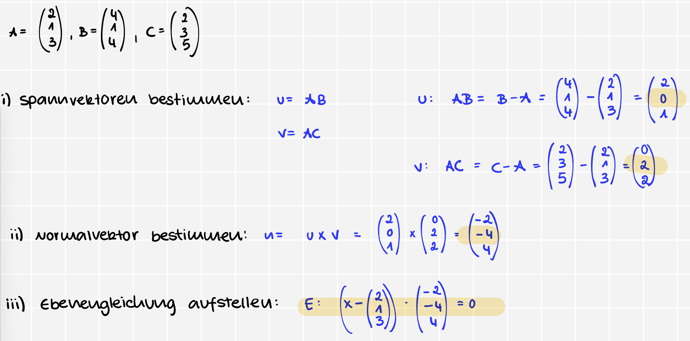

allgemeine Form = $ax^2 + 2bxy + cy^2 + dx + ey + f = 0$Matrix aufstellen
$\begin{pmatrix} a & b \ b & c \end{pmatrix}$
Eigenwerte bestimmen
Einsetzten in d. Normalform
| λ1 | λ2 | h | Typ | Beispiel |
|---|---|---|---|---|
| + | + | + | leere Menge | u² + v² + 1 = 0 |
| + | + | 0 | Punkt | u² + v² = 0 |
| + | + | - | Ellipse | u² + v² = 1 |
| + | 0 | + | leere Menge | u² + 1 = 0 |
| + | 0 | 0 | Gerade (Doppelgerade) | u² = 0 |
| + | 0 | - | zwei parallele Geraden | u² - 1 = 0 |
| + | - | + | Hyperbel | u² - v² = -1 |
| + | - | 0 | zwei sich schneidende Geraden | u² - v² = 0 |
| + | - | - | Hyperbel | u² - v² = 1 |
$\begin{pmatrix} 1 \ 0 \ 2 \end{pmatrix}$ = Stützvektor
$\begin{pmatrix} 2 \ 1 \ 0 \end{pmatrix}$ & $\begin{pmatrix} 0 \ 1 \ 3 \end{pmatrix}$ = Spannvektoren
Skalarprodukt
Vektorprodukt
Vektorprodukt
$E: (\vec{x} - \vec{c}) \cdot (\vec{a} \times \vec{b}) = 0$
$[x - \text{Stütztvektor}] \cdot \text{Normalvektor} = 0$

$\boxed{x_1 + x_2 + x_3 = 4}$
$u = AB = B - A= \begin{pmatrix} 0-4 \ 4-0 \ 0-0 \end{pmatrix} = \begin{pmatrix} -4 \ 4 \ 0 \end{pmatrix}$
$v = AC = C - A= \begin{pmatrix} 0-4 \ 0-0 \ 4-0 \end{pmatrix} = \begin{pmatrix} -4 \ 0 \ 4 \end{pmatrix}$
wenn es geschirben ist als $(1,2,3) + \lambda(1,2,3)$, dann ist es eigentl.: $\begin{pmatrix} 1 \ 2 \ 3 \end{pmatrix} + \lambda \cdot \begin{pmatrix} 1 \ 2 \ 3 \end{pmatrix}$
Nullpunkt des Koordinatensystems im Unterraum enthalten sein
Ebene & Gerade $\lnot$ durch den Punkt $\implies$ autom. $\lnot$ im UnterraumIch muss d. parametrische Form v. U darstellen & d. 2 Vektoren sind dann autom. meine Basen
Bsp: $$U := {(x_1,x_2,x_3) \in \mathbb{R}^3: x_1 + x_2 + x_3 = 0}$$ 1 Gleichung $<$ 3 Var. = 2 Var. frei $\implies x_2 = s, x_3 = t$ $$x_1+t+s = 0$$ $$x_1 = -t-s$$ $$U = \begin{pmatrix} -t-s \ t \ s \end{pmatrix} = t \cdot \begin{pmatrix} -1 \ 1 \ 0 \end{pmatrix} + s \cdot \begin{pmatrix} -1 \ 0 \ 1 \end{pmatrix}$$ Somit ist die Basis autom.: $B = \left{ \begin{pmatrix} -1 \ 1 \ 0 \end{pmatrix}, \begin{pmatrix} -1 \ 0 \ 1 \end{pmatrix} \right}$
Basen, d. ich bereits habe linear unabhängig sind !